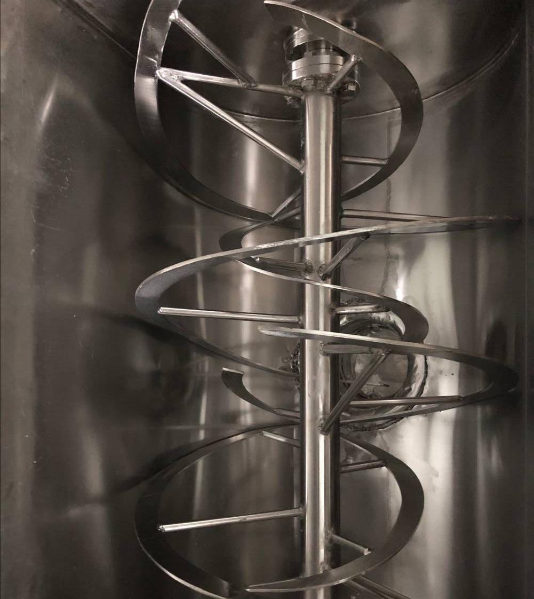
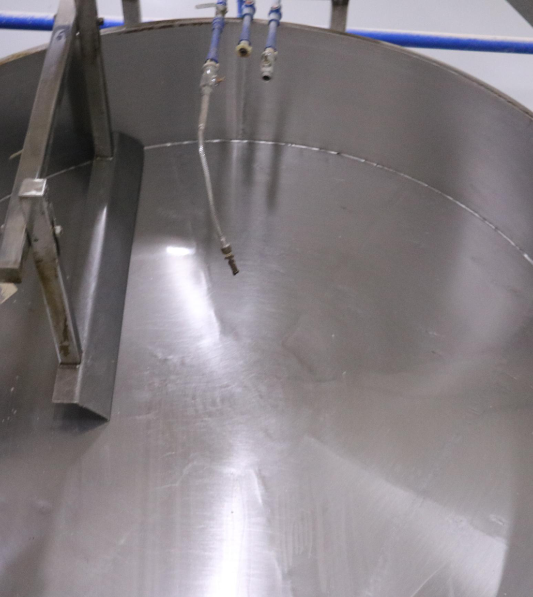
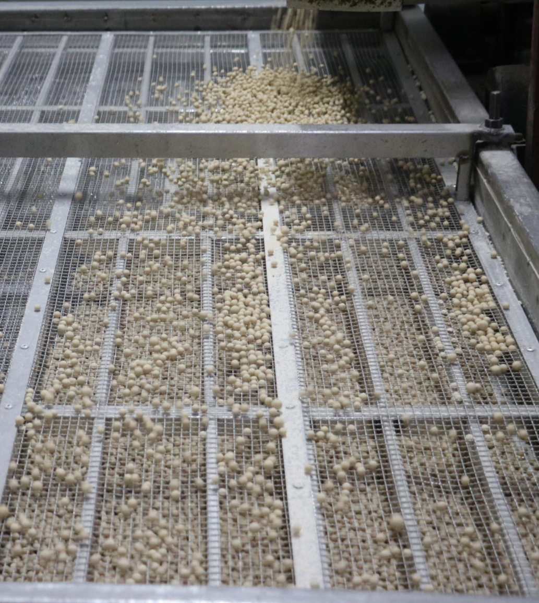
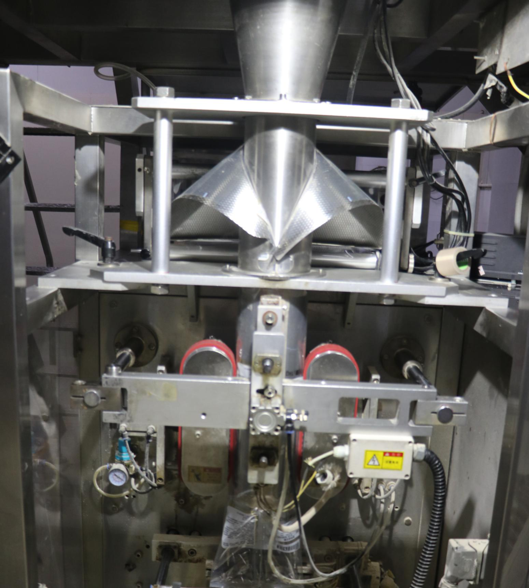
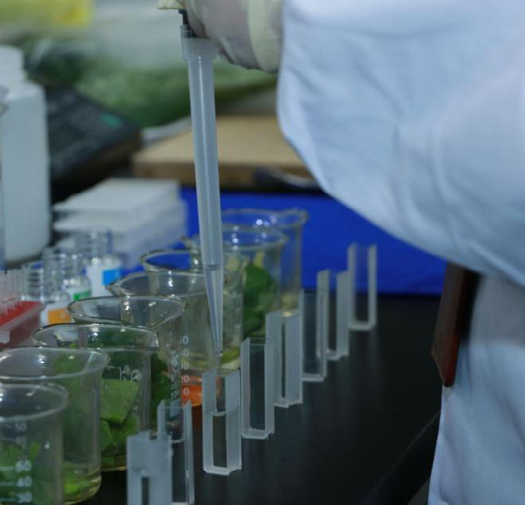
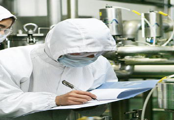
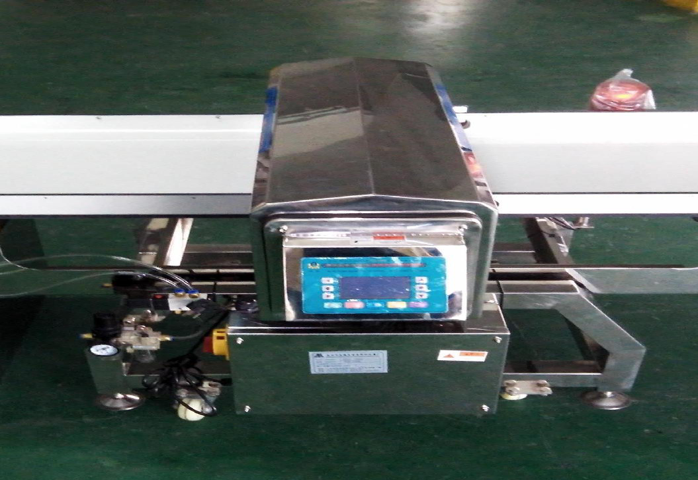

01
原料筛选Raw material selection
先确认木薯淀粉和配料状态，让后续加工有稳定基础。We first confirm the starch and ingredients so the next steps stay stable.
先确认木薯淀粉和配料状态，让后续加工有稳定基础。We first confirm the starch and ingredients so the next steps stay stable.
把原料按配方拌匀并做成颗粒，决定基础口感和外观。We mix by recipe and form the pearls to shape the texture and look.
把大小不一致的颗粒分开，让成品更整齐、批次更统一。We sort out uneven pearls so the final batch looks cleaner and more even.
在出货前再看一次外观、含水和口感表现，避免不稳定批次流出。Before shipping, we recheck the look, moisture, and texture to avoid unstable batches.
完成封装、标识和批次记录，方便追踪，也更容易安排补货。We finish packing, labeling, and batch records so tracking and restocking are easier.
按订单和交期安排发货，让门店补货更顺、节奏更稳定。We ship by order and lead time so store replenishment stays smooth.

搅拌工序示意图将原料按照配方比例均匀混合，为后续成型提供稳定基础。Blend the ingredients evenly to build a solid base.

成型工序示意图通过成型控制颗粒尺寸与外观，使整批产品保持一致性。Forming keeps the size and look consistent across the batch.

筛分工序示意图对成型后的粉圆进行筛分整理，减少杂质并提升均匀度。We sieve the formed pearls to remove impurities and keep them even.

包装工序示意图完成封装、标识与批次管理后入库，便于后续追踪与供货。We seal, label, and track each batch before storage.

原料质检示意图入厂先确认原料状态，避免一开始就带来偏差。We check incoming materials first so problems do not start at the source.

现场管控示意图在生产过程中持续看温度、成型和批次表现，减少波动。We keep an eye on temperature, forming, and batch consistency during production.

成品质检示意图在入库和发货前再确认外观、口感和包装完整性。Before storage and shipping, we check the look, texture, and packaging once more.